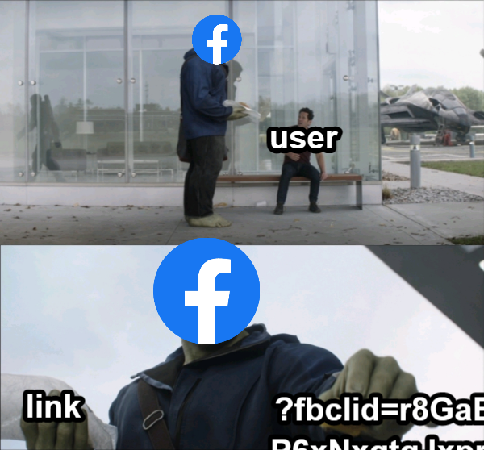
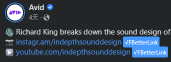
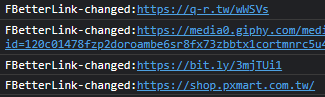

Author:sstteeeenn05
Say goodbye to Facebook link tracker

Just browsing Facebook normally.
The program will automatically change the links.
The link without Facebook tracker will be marked by a blue tag.
It may like this:
If you see this, congratulations, you can enjoy clicking link without Facebook tracking.
You can alse check which link was changed in console:
